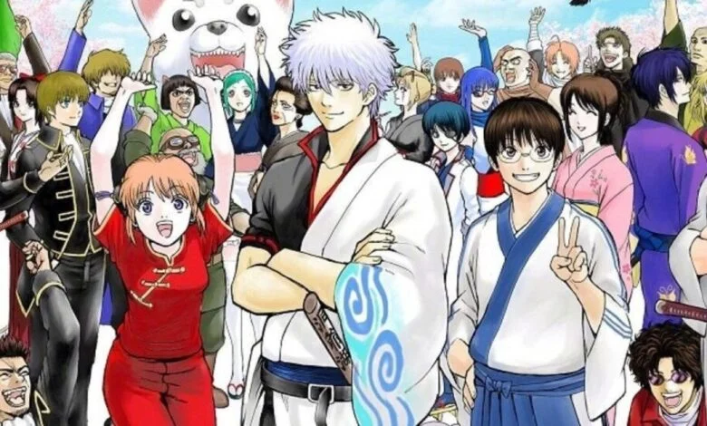
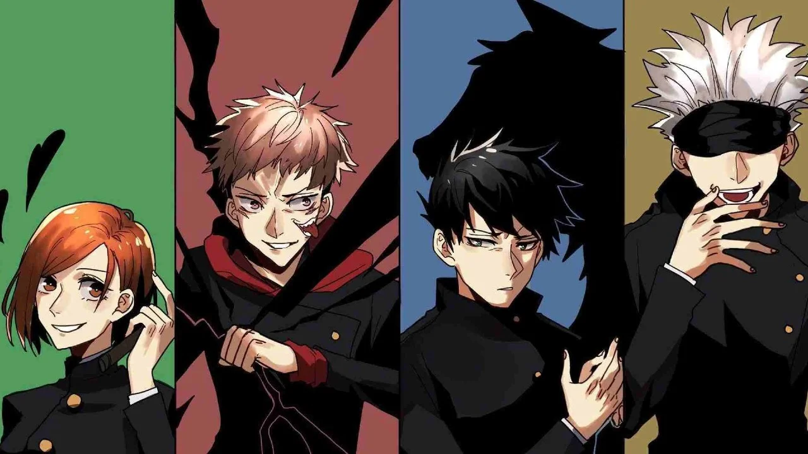
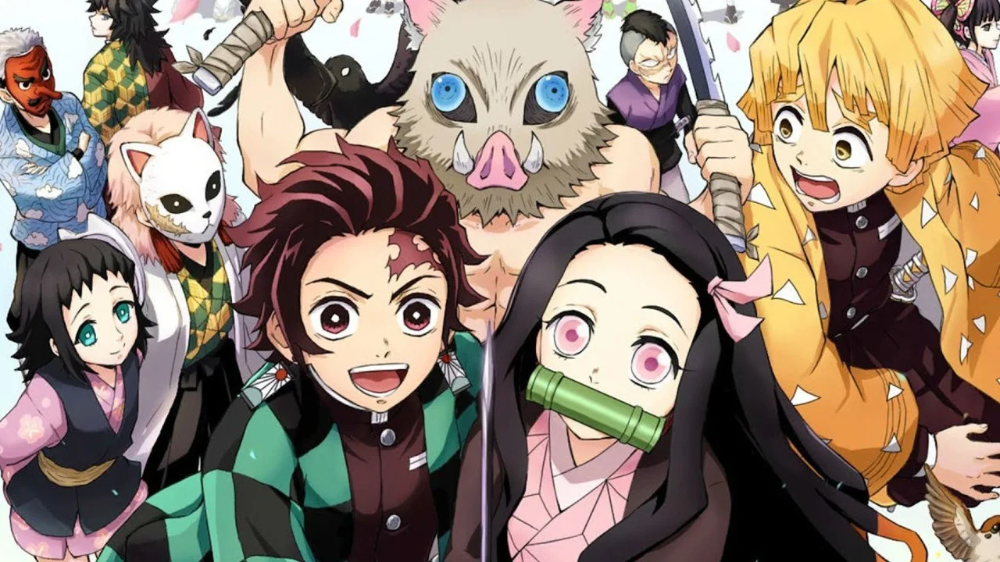
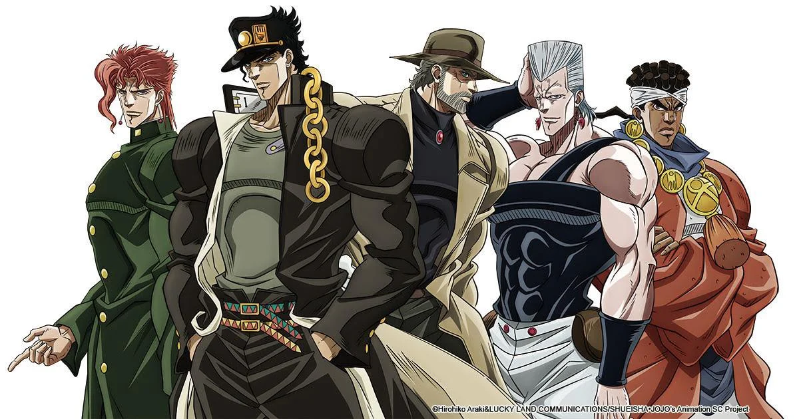
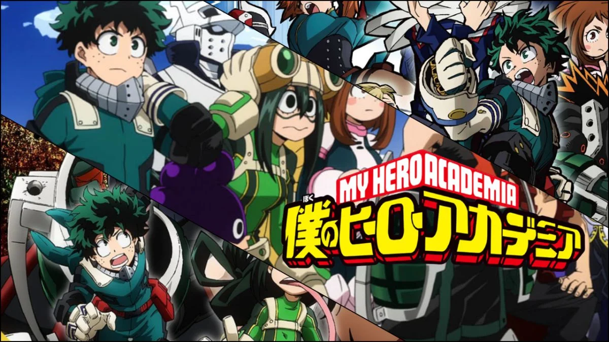
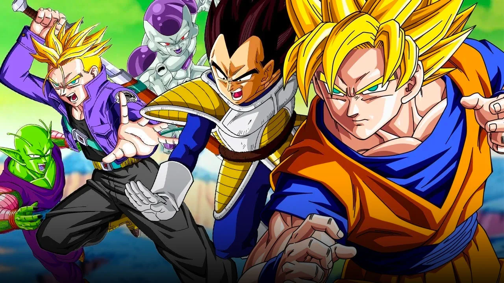
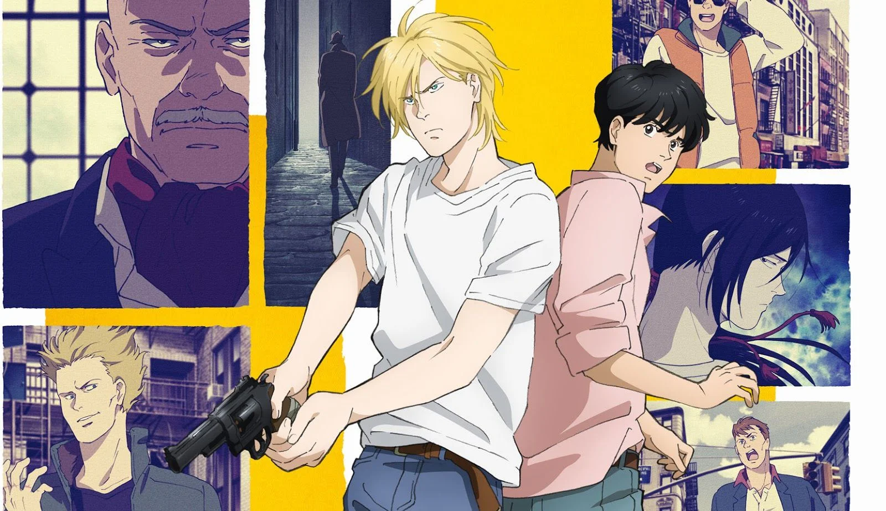
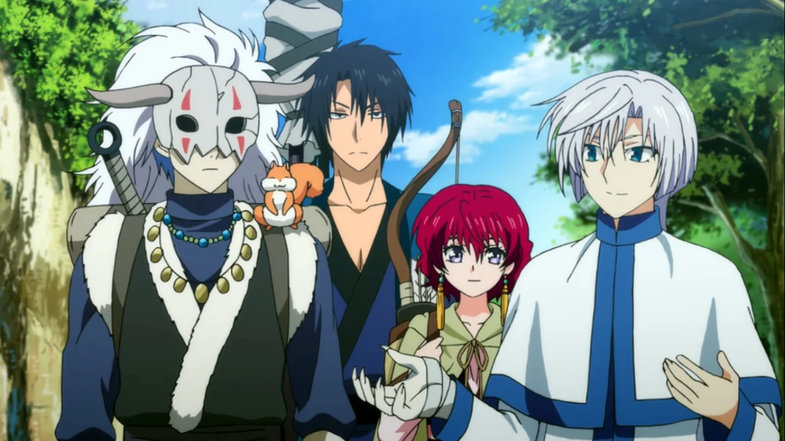

En un Japón feudal del futuro invadido por alienígenas y donde se ha prohibido la profesión de samurai, encontramos a los miembros de la Yorozuya: un exsamurai, una yato y un chico con gafas. Este anime, que tiene su origen en un popular manga publicado en la Shonen Jump, mezcla el humor con el drama de forma magistral, dando lugar a algunos de los momentos más hilarantes, memorables surrealistas y épicos de la industria. Con un total de 367 episodios (unos más animados que otros), Gintama ofrece cientos de horas de diversión y un plantel de personajes de lo más variados que se han ganado un hueco en el corazón de muchísimos aficionados.
Es el shonen que está causando furor desde su en la temporada de invierno de 2020. Una serie con un ritmo increíble, unos personajes que derrochan carisma por cada píxel y una trama que combina el humor con los combates contra maldiciones de una forma magnífica. Además, su animación acompaña el ritmo de la trama, haciendo que ver esta serie sea una experiencia de lo más satisfactoria. Todavía está en emisión, y su primera temporada finalizará cuando alcance los 24 episodios.
Si tuviste conexión a internet durante 2019 es probable que te hayas cruzado con más de una foto de un chico con cabeza de jabalí o de una niña con una especie de bambú en la boca. Demon Slayer fue uno de los shonen más populares de 2019 con diferencia. Una historia repleta de acción y batallas que se concentran en tan solo 26 episodios y que supuso la puerta de entrada al género para muchas personas que, hasta aquel momento, no se habían animado a consumir este tipo de series japonesas.
Uno de los mangas más aclamados de la Shonen Jump desde 1986 llegó a la pequeña pantalla en 2012 con la adaptación animada de su primer arco. Respetando el característico estilo de dibujo y uso del color de su mangaka, Hirohiko Araki, esta serie ya ha adaptado los cinco primeros arcos del manga en un total de 152 episodios. Su popularidad ha crecido mucho en los últimos años más allá de las fronteras niponas, volviendo mucho de sus momentos en, prácticamente, parte de la cultura popular. Como todo shonen largo, tiene momentos en los que la agilidad de la trama disminuye, pero si somos capaces de pasarlo por alto tendremos por delante decenas de horas repletas de acción y calidad.
El manga post apocalíptico de titanes tuvo su adaptación a la televisión en 2013 con la primera temporada de Attack on Titan. Ocho años después, estamos viviendo la emisión de su cuarta y última temporada, descubriendo todos los secretos y entramados políticos donde los titanes no están siendo el enemigo más aterrador. Es una serie que ha tenido en vilo a sus fans durante años, con una narrativa adictiva y una duración que le va como anillo al dedo.
Si ha habido una serie anime que en los últimos años ha creado una comunidad de fans que destaca por su tamaño es Boku no Hero. En 2019 se emitió la primera teporada del shonen que, por la popularidad del manga en el que estaba basado, prometía ser sucesor de las grandes sagas que estaban llegando a su fin como Naruto y One Piece. Y, en términos de popularidad, así ha sido. Los fans están esperando la quinta temporada del anime mientras el manga que trata de una sociedad en la que ser un héroe es un trabajo tan común como ser bombero sigue en emisión. Es una obra muy coral, plagada de aventuras y de personajes carismáticos.
Una apuesta segura para los que, cuando la situación lo requirió, mandaron todas sus fuerzas a Goku para salvar el planeta. Ambientado en un planeta Tierra siete años después de los acontecimientos de Dragon Ball Z, los 131 episodios de esta temorada nos permiten seguir los pasos del elenco clásico con algunos personajes nuevos. Aquellos que ya se ganaron un hueco en nuestros corazones y en el imaginario de la cultura pop regresan a la pequeña pantalla para darnos más fusiones, batallas y momentos épicos.
Un tímido chico japonés acaba sumido en una grave encrucijada de la mafia de Nueva York debido a su nueva amistad con Ash. Siendo dos polos opuestos, Eji y Ash tendrán que desafiar a todo un entramado de personajes poderosos para salir airosos de la situación durante los 24 episodios en los que se condensan sus andanzas. Un anime recomendado especialmente para los que busquen una historia más occidental, con una trama tensa que te mantiene todo el rato al borde del sofá.
Quizás sea una de las series menos conocida de la lista, pero tiene un fiel séquito de seguidores. Es un anime de corte histórico, lleno de magia y guerreros, con una protagonsta fuerte y un elenco con grandes arcos de personaje. En sus 24 episoios no concluye la totalidad de la trama, ya que el manga en el que se basa continúa en publicación, pero es una buena forma de disfrutar del inicio de la historia i, incluso, de iniciarse en ella para luego continuar con la versión sobre papel.
